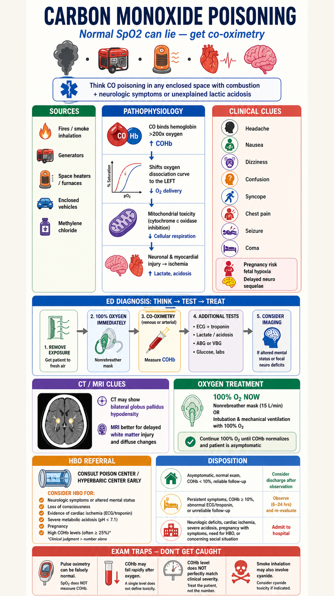
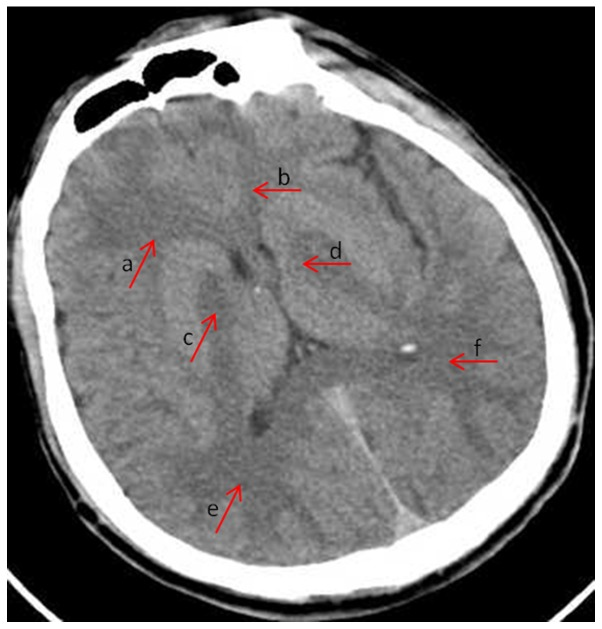

{kind=link}
{kind=link}
Carbon Monoxide Poisoning: CT Findings + ED Oxygen Pathway
ED approach to carbon monoxide poisoning with real CT lesion description: normal SpO2 trap, COHb co-oximetry, brain/heart injury, smoke inhalation cyanide screening, 100% oxygen, hyperbaric oxygen referral, pregnancy/pediatric cautions, delayed neurologic sequelae, and disposition.

Real CT source: Du et al., Experimental and Therapeutic Medicine 2019, PMCID PMC6425274, Figure 1. Image redistributed without alteration for noncommercial education under CC BY-NC-ND 4.0.
CT describe: toxic-hypoxic basal ganglia injury
- Noncontrast CT can be normal early and is not required to diagnose CO poisoning; never delay oxygen or hyperbaric consultation for imaging.
- In this CT figure, arrows c and d mark bilateral globus pallidus decreased attenuation; arrows a, b, e, and f mark subcortical low attenuation.
- The classic CO pattern is symmetric globus pallidus injury from hypoxic and mitochondrial toxicity. MRI is more sensitive for delayed white-matter demyelination.
- Not pathognomonic: bilateral globus pallidus lesions also raise cyanide, methanol, hypoxic-ischemic injury, and metabolic/mitochondrial differentials. Correlate with exposure history, COHb by co-oximetry, lactate, acidosis, and neuro/cardiac findings.
ED framing
Think CO when multiple people have headache, nausea, dizziness, syncope, altered mental status, chest pain, seizure, or coma after combustion in an enclosed or poorly ventilated space.
Epidemiology
Tintinalli describes CO as one of the most common toxic exposures in ED practice, with fall/winter peaks from heaters, stoves, generators, and enclosed exhaust exposure.
Pathophysiology
CO binds hemoglobin with over 200x oxygen affinity, shifts the oxyhemoglobin curve left, inhibits mitochondrial oxidative phosphorylation, and injures high-demand brain and myocardium.
Focused history
Ask about fires, generators, space heaters, furnaces, garages, boats, work exposures, methylene chloride paint stripper, pregnancy, duration, loss of consciousness, and similar symptoms in household members or pets.
Focused exam
ABCs, mental status/GCS, neurologic deficits/ataxia, cardiac ischemia/dysrhythmia signs, burn/inhalation injury, trauma from collapse, skin bullae, and pregnancy/fetal risk assessment.
Red flags
High risk coma, seizure, syncope/LOC, focal neurologic deficit, severe acidosis, elevated lactate, ischemic ECG/troponin, pregnancy, pediatric/elderly/comorbid heart disease, or persistent symptoms.
Differential diagnosis
Influenza/viral syndrome, migraine, sedative/opioid intoxication, cyanide smoke inhalation, methemoglobinemia, sepsis, hypoglycemia, stroke, ACS/dysrhythmia, seizure/postictal state, inhalation injury, and trauma.
Initial stabilization
- Remove from exposure and protect rescuers; notify fire/public safety for ongoing household or workplace risk.
- Start 100% oxygen immediately by nonrebreather; intubate and ventilate with FiO2 1.0 if airway protection, hypoventilation, severe burns, or coma is present.
- Do not trust normal SpO2. Standard pulse oximetry reads carboxyhemoglobin as oxyhemoglobin and can be falsely normal.
- Smoke inhalation with shock, coma, or severe lactic acidosis should trigger cyanide consideration and burn/airway management.
Diagnostic pathway
1. Confirm exposure physiology
Send venous or arterial blood gas with co-oximetry for COHb. Venous COHb correlates well and is sufficient in most cases.
2. Grade end-organ injury
ECG and troponin, lactate, pH/ABG or VBG, BMP, glucose, CK/urinalysis if prolonged down time, pregnancy testing when relevant, and CXR/bronchoscopy pathway for inhalation injury.
3. Image selectively
CT head for persistent altered mental status, trauma, focal deficits, coma, or diagnostic uncertainty. MRI is better for delayed neuro sequelae and white-matter injury.
4. Risk stratify early
COHb level helps, but does not perfectly match severity because it falls after oxygen. Clinical severity and end-organ injury drive disposition and HBO discussion.
Medication / treatment table
| Treatment | Adult dose | Pediatric dose | Route / max | Contraindications, adverse effects, cautions |
|---|---|---|---|---|
| 100% oxygen | Nonrebreather 15 L/min immediately; continue until asymptomatic and COHb is falling/near-normal per local protocol. | Same principle with age-appropriate mask flow; use highest FiO2 tolerated. | Inhaled. If intubated, ventilator FiO2 1.0 initially. | No meaningful contraindication in suspected CO poisoning. COPD CO2 retention is monitored but oxygen is not withheld. Watch for airway/burn injury and aspiration. |
| Hyperbaric oxygen (HBO) | Consult hyperbaric/poison center early; protocols are center-specific, often 2.4-3.0 ATA sessions. | Same referral logic; children need chamber-capable monitoring and transport planning. | Hyperbaric chamber therapy, not ED bedside medication. | Consider for neurologic symptoms, LOC/syncope, cardiac ischemia, severe acidosis, pregnancy, or high COHb. Untreated pneumothorax is a major contraindication; adverse effects include barotrauma, claustrophobia, oxygen toxicity seizure. |
| Lorazepam for seizure | 2-4 mg IV/IO; repeat once if needed. | 0.1 mg/kg IV/IO/IM, max 4 mg per dose. | IV/IO/IM. Prepare airway support. | Respiratory depression and hypotension; seizure is a high-risk CO feature and strengthens ICU/HBO consultation. |
| Hydroxocobalamin if cyanide suspected | 5 g IV over 15 min; may repeat once for severe poisoning. | 70 mg/kg IV, max 5 g; may repeat once. | IV; adult total max commonly 10 g. | Use for smoke inhalation with coma, shock, cardiovascular collapse, or severe lactic acidosis. Causes red skin/urine, hypertension, lab interference; do not delay in life-threatening suspected cyanide toxicity. |
Disposition
- ICU/admit: coma, intubation, seizure, persistent neurologic findings, cardiac ischemia/dysrhythmia/troponin elevation, severe acidosis, significant burn/inhalation injury, pregnancy with symptoms or elevated COHb, unreliable home safety, or need for HBO transfer.
- Observation: symptomatic patients without high-risk features until symptoms resolve, neuro/cardiac reassessment is stable, COHb is improving, and exposure source is controlled.
- Discharge only if low risk: asymptomatic or fully resolved mild symptoms, normal exam and ECG/troponin when indicated, reliable follow-up, safe environment verified, and return precautions for delayed neurologic symptoms.
Common exam traps
- Normal pulse ox does not exclude CO poisoning; order co-oximetry.
- COHb can be lower by ED arrival after oxygen; a single number does not define toxicity.
- Pregnancy is higher risk because fetal hemoglobin has higher CO affinity and fetal clearance is delayed.
- Smoke inhalation can be CO plus cyanide; severe lactic acidosis should not be waved away as only hypoxia.
- CT globus pallidus hypodensity supports toxic-hypoxic injury but is neither required nor exclusive to CO.
Sources
- Primary source: local Tintinalli 9th PDF text extract, mainly Chapter 222 Carbon Monoxide, Chapter 217 Thermal Burns, Chapter 21 Hyperbaric Oxygen Therapy, and Chapter 62 cyanosis/dyshemoglobinemia discussion.
- External clinical cross-check: CDC Clinical Guidance for Carbon Monoxide Poisoning.
- Real CT image: Du et al., Utility of brain CT for predicting delayed encephalopathy after acute carbon monoxide poisoning, CC BY-NC-ND 4.0.
- Image workflow: main visual generated with Codex built-in
image_gen; real CT downloaded as a separate attributed asset and described in HTML.